Firewall на MikroTik - фільтрація трафіку та NAT
Курс: Комп'ютерні мережі, L1B | 2-3 курс
Перевірено на RouterOS 7.24.5 та WinBox 4.4
1 Схема мережі
📁 Зображення схеми:
assets/network-configs_mikrotik-firewall_1.svg
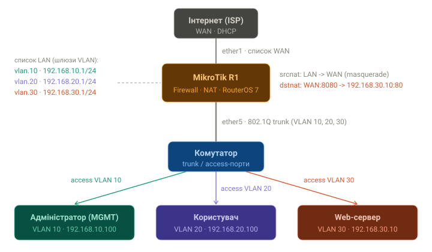
Інструкція є продовженням VLAN на MikroTik: на маршрутизаторі R1 вже налаштовано VLAN 10, 20, 30 за схемою router-on-a-stick. Додатково порт ether1 підключено до провайдера (WAN)
| VLAN | Підмережа | Шлюз (R1) | Вузол | Призначення |
|---|---|---|---|---|
| 10 | 192.168.10.0/24 | 192.168.10.1 | 192.168.10.100 | Адміністрування (MGMT) |
| 20 | 192.168.20.0/24 | 192.168.20.1 | 192.168.20.100 | Користувачі |
| 30 | 192.168.30.0/24 | 192.168.30.1 | 192.168.30.10 | Сервери (Web-сервер) |
| - | адреса від провайдера (DHCP) | - | - | WAN, порт ether1 |
Якщо WAN ще не налаштовано - отримати адресу від провайдера та (за потреби) увімкнути на R1 DNS-сервер для клієнтів:
1.1 Політика безпеки
Що має дозволяти firewall:
| Звідки | Куди | Що дозволено |
|---|---|---|
| VLAN 10 (адміністратори) | маршрутизатор R1 | WinBox (TCP 8291), SSH (TCP 22) |
| усі VLAN | маршрутизатор R1 | ping (ICMP), DNS (порт 53) |
| VLAN 10 | будь-куди | усе |
| VLAN 20 | Web-сервер 192.168.30.10 | тільки HTTP/HTTPS (TCP 80, 443) |
| усі VLAN | Інтернет | усе |
| Інтернет | Web-сервер | TCP 8080 на WAN-адресі R1 → 192.168.30.10:80 |
| усе інше | заборонено та записується в журнал |
Принцип налаштування
Використовується підхід "дозволити потрібне - заборонити все інше" (default deny): спочатку правила accept для потрібного трафіку, а останнім у кожному ланцюжку - правило drop для всього, що не підійшло під жодне правило
2 Теоретичні відомості
2.1 Складові Firewall у RouterOS
Firewall знаходиться в меню IP → Firewall. Кожна вкладка - окрема таблиця правил або допоміжний інструмент
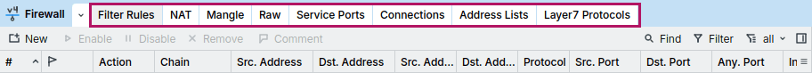
| Вкладка | Призначення |
|---|---|
| Filter Rules | Фільтрація: пропустити або відкинути пакет. Основна вкладка цієї інструкції |
| NAT | Трансляція адрес: вихід LAN в Інтернет (masquerade), проикдання портів (dst-nat) |
| Mangle | Маркування пакетів і з'єднань для маршрутизації та QoS (у цій інструкції не використовується) |
| Raw | Обробка пакетів до connection tracking - найдешевший спосіб відкинути небажаний трафік |
| Service Ports | NAT-помічники для протоколів FTP, SIP, PPTP тощо |
| Connections | Таблиця з'єднань, які відстежує маршрутизатор |
| Address Lists | Іменовані списки IP-адрес для використання в правилах |
| Layer7 Protocols | Пошук шаблонів (regex) у вмісті пакетів - сильно навантажує процесор |
Якщо ви знайомі з iptables
Firewall RouterOS побудований за тією ж логікою, що й iptables у Linux: ланцюжок input = INPUT, forward = FORWARD, output = OUTPUT, dstnat = PREROUTING таблиці nat, srcnat = POSTROUTING, а address-list - аналог ipset
2.2 Ланцюжки: куди потрапляє пакет
📁 Схема:
assets/network-configs_mikrotik-firewall_3.svg
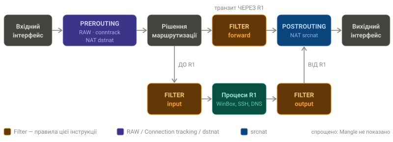
| Ланцюжок | Який трафік обробляє | Приклад |
|---|---|---|
input |
адресований самому маршрутизатору | WinBox, SSH, ping шлюзу, DNS-запит до R1 |
forward |
що проходить через маршрутизатор | ПК з VLAN 20 → Web-сервер, ПК → Інтернет |
output |
створений самим маршрутизатором | R1 звертається до DNS провайдера, ping з R1 |
Отже, input захищає сам маршрутизатор, а forward - мережі за ним. Ланцюжок output у цій інструкції не фільтруємо
2.3 Порядок обробки правил
- Правила ланцюжка перевіряються згори донизу
- Перше правило з кінцевою дією (
accept,drop,reject) завершує обробку пакета - нижчі правила вже не перевіряються - Дії
log,add-src-to-address-list,passthroughне кінцеві: пакет перевіряється далі - Якщо пакет не підійшов під жодне правило - він пропускається. На відміну від Cisco ACL, у RouterOS немає неявного
deny anyв кінці, тому правилоdropтреба додати самостійно
Порядок має значення
Правило drop, розміщене вище за правила accept, заблокує й потрібний трафік - включно з вашим підключенням WinBox
2.4 Стани з'єднань (connection tracking)
Маршрутизатор відстежує кожне з'єднання (вкладка Connections) і визначає для кожного пакета його стан:
| Стан | Значення |
|---|---|
new |
перший пакет нового з'єднання (наприклад, TCP SYN) |
established |
пакет уже відомого з'єднання, на яке була відповідь |
related |
пакет, пов'язаний з наявним з'єднанням (ICMP-помилки, дані FTP) |
invalid |
пакет, що не належить жодному відомому з'єднанню або некоректний |
untracked |
пакет, для якого відстеження вимкнено в Raw (дія notrack) |
Тому достатньо дозволити лише початок з'єднання в потрібному напрямку - відповіді пройдуть через правило established,related. Такий firewall називають stateful
2.5 Дії (Action)
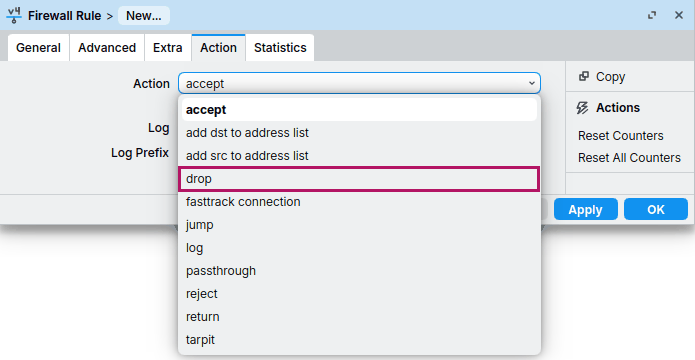
| Дія | Що робить |
|---|---|
accept |
пропустити пакет |
drop |
мовчки відкинути (відправник не отримує відповіді) |
reject |
відкинути та повідомити відправника (ICMP-помилка або TCP RST) |
log |
записати пакет у журнал і перевіряти далі |
add src/dst to address list |
додати адресу джерела/призначення в address-list і перевіряти далі |
jump / return |
перейти у власний ланцюжок / повернутися з нього |
passthrough |
лише порахувати пакет і перевіряти далі |
fasttrack connection |
пропускати пакети з'єднання в обхід firewall (див. розділ 3.9) |
tarpit |
"утримувати" TCP-з'єднання атакуючого (захист від сканування) |
drop чи reject?
Для трафіку з Інтернету використовуйте drop - сканер не дізнається, що порт закритий. reject зручніший усередині LAN: клієнт одразу отримує помилку замість очікування тайм-ауту
2.6 Особливості WinBox 4
У формах правил WinBox 4 поля умов за замовчуванням приховані:
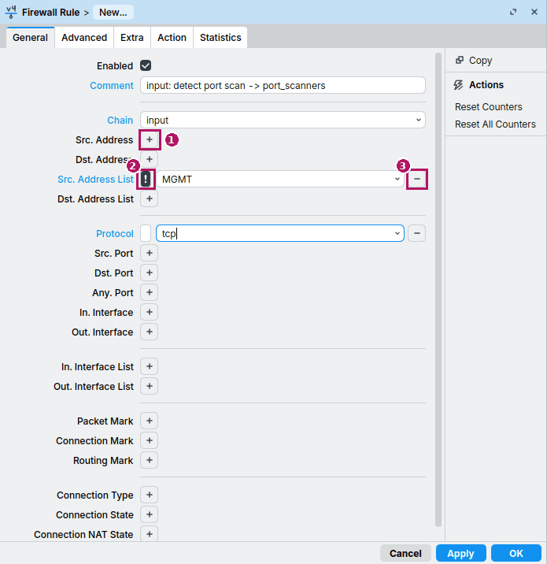
- + - додати умову (поле з'являється у формі)
- ! - інвертувати умову (логічне НЕ). На знімку
!MGMTозначає "усі адреси, крім списку MGMT" - − - прибрати умову
Інші корисні елементи:
- Copy (права панель вікна правила) - створює копію правила, яку можна змінити
- Порядок правил змінюється перетягуванням за маркер
⠿ліворуч від номера правила - Comment правила показується окремим рядком над ним
- Safe Mode - перемикач у верхній панелі WinBox
2.7 Interface List та Address List
- Interface List - іменований список інтерфейсів (
WAN,LAN). Правила посилаються на список, а не на конкретний інтерфейс: якщо з'явиться новий VLAN, достатньо додати його до спискуLAN- правила firewall змінювати не потрібно - Address List - іменований список IP-адрес або підмереж. Записи бувають постійні та тимчасові (з
timeout), їх можна додавати автоматично правилами firewall. Як адресу можна вказати й доменне ім'я - RouterOS сам визначить його IP-адреси
3 Налаштування MikroTik (RouterOS 7)
3.1 Підготовка - Safe Mode
Firewall може заблокувати доступ до самого маршрутизатора
Помилка в правилах input - і WinBox-сесія обірветься. Підключайтеся до R1 з VLAN 10 (адреса 192.168.10.1) та вмикайте Safe Mode перед змінами
Safe Mode вмикається перемикачем у верхній панелі WinBox (у терміналі - Ctrl+X або F4). Якщо з'єднання обірветься, RouterOS автоматично скасує всі зміни, зроблені в цьому режимі (обрив визначається за TCP-тайм-аутом - до 9 хвилин). Коли все працює - вимкніть Safe Mode, і зміни буде збережено
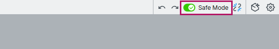
Обмеження Safe Mode
Safe Mode пам'ятає до 100 останніх змін. Якщо їх більше - режим вимикається автоматично і зміни не відкочуються. Тому вмикайте його для кожного кроку окремо
Заводська конфігурація (defconf)
На маршрутизаторах MikroTik із заводськими налаштуваннями вже є списки WAN/LAN та правила firewall з коментарем defconf. Перевірте перед початком: /ip firewall filter print. Інструкція розрахована на конфігурацію без заводських правил (як після налаштування з VLAN на MikroTik)
3.2 Крок 1 - Створити списки інтерфейсів WAN та LAN
/interface list
add name=WAN
add name=LAN
/interface list member
add list=WAN interface=ether1
add list=LAN interface=vlan.10
add list=LAN interface=vlan.20
add list=LAN interface=vlan.30
WinBox: Interfaces → вкладка Interface List → Lists → New → Name = WAN. Аналогічно створити список LAN
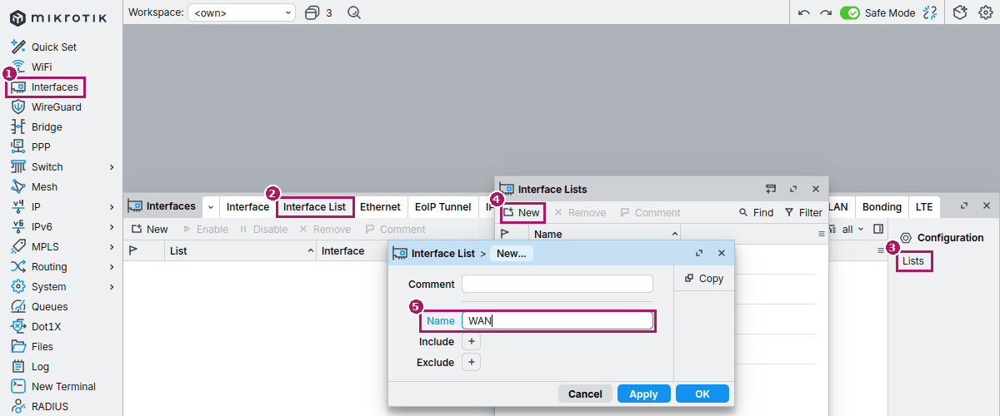
Додати інтерфейси до списків: вкладка Interface List → New → List = WAN, Interface = ether1. Аналогічно vlan.10, vlan.20, vlan.30 → список LAN
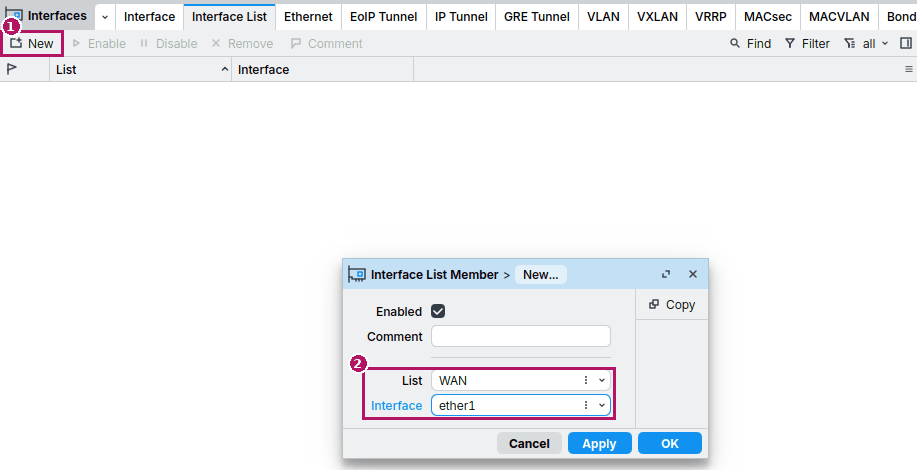
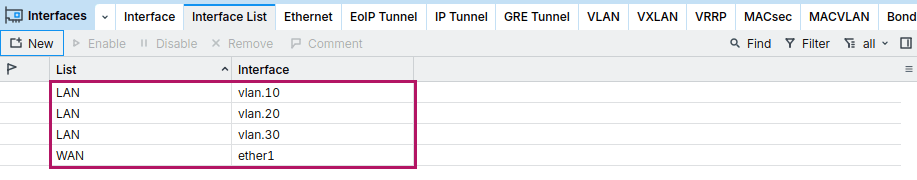
Чому vlan.X, а не bridge1 чи ether5
Firewall працює на 3 рівні й бачить інтерфейс, на якому знаходиться IP-адреса. Для наших мереж це vlan.10, vlan.20, vlan.30 - саме їх видно в журналі як in:vlan.20
3.3 Крок 2 - Створити список адрес адміністраторів MGMT
Цей список використовується для доступу до керування маршрутизатором
WinBox: IP → Firewall
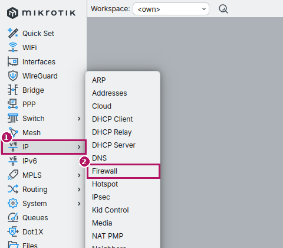
Вкладка Address Lists → New → List = MGMT, Address = 192.168.10.0/24
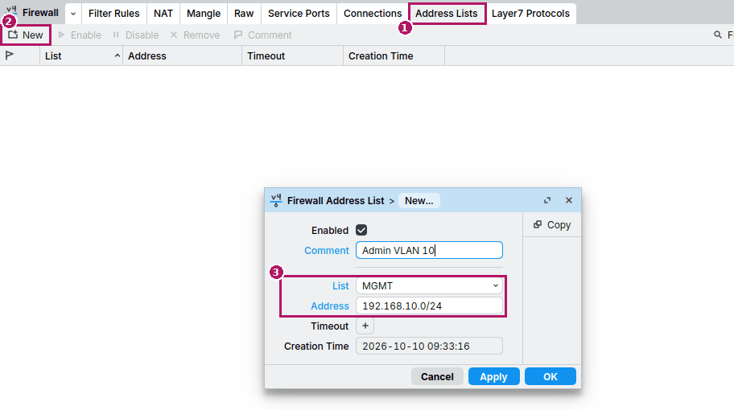
Суворіший варіант
Замість усієї підмережі можна додати лише адреси конкретних адміністраторів, наприклад 192.168.10.100/32
3.4 Крок 3 - Захист маршрутизатора (ланцюжок input)
| № | Правило | Навіщо |
|---|---|---|
| 1 | accept established, related, untracked | пропустити відповіді та вже дозволені з'єднання |
| 2 | drop invalid | відкинути некоректні пакети |
| 3 | accept ICMP | ping та службові ICMP-повідомлення |
| 4 | accept WinBox/SSH з MGMT | керування маршрутизатором лише з VLAN 10 |
| 5-6 | accept DNS з LAN | клієнти використовують R1 як DNS-сервер |
| 7 | drop усе інше + журнал | заборонити все, що не дозволено вище |
/ip firewall filter
add chain=input action=accept \
connection-state=established,related,untracked \
comment="input: accept established,related,untracked"
add chain=input action=drop connection-state=invalid \
comment="input: drop invalid"
add chain=input action=accept protocol=icmp \
comment="input: accept ICMP"
add chain=input action=accept protocol=tcp dst-port=22,8291 \
src-address-list=MGMT comment="input: accept WinBox/SSH from MGMT"
add chain=input action=accept protocol=udp dst-port=53 in-interface-list=LAN \
comment="input: accept DNS (udp) from LAN"
add chain=input action=accept protocol=tcp dst-port=53 in-interface-list=LAN \
comment="input: accept DNS (tcp) from LAN"
add chain=input action=drop log=yes log-prefix="IN-DROP" \
comment="input: drop all other"
Коментарі до правил
Підписуйте кожне правило (поле Comment): через місяць ніхто не згадає, навіщо потрібне "правило №5". Коментарі також зручно використовувати в командах: [find comment="..."]
Далі - те саме у WinBox: IP → Firewall → вкладка Filter Rules → New
Правило 1 - пропустити встановлені з'єднання
- General: Chain =
input, Connection State (кнопка +) = ☑established☑related☑untracked - Action: Action =
accept(значення за замовчуванням) - Comment:
input: accept established,related,untracked
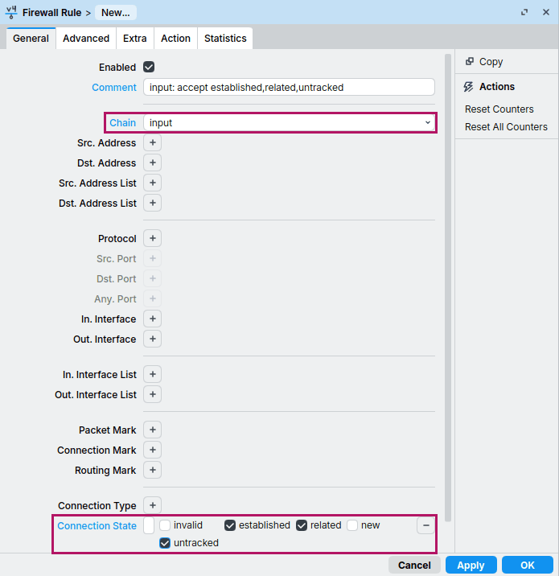
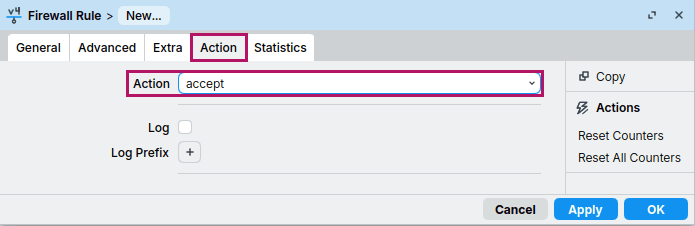
Правило 2 - відкинути invalid
- General: Chain =
input, Connection State = ☑invalid - Action: Action =
drop
Правило 3 - дозволити ICMP
- General: Chain =
input, Protocol =icmp - Action:
accept
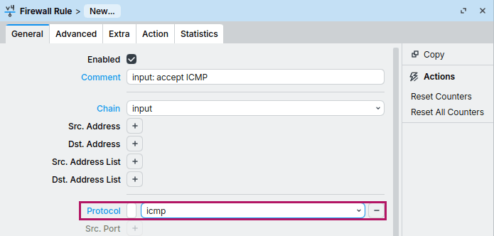
Чому не блокувати ping
ICMP потрібен не лише для ping: через нього передаються повідомлення про помилки та працює визначення MTU (Path MTU Discovery). Повна заборона ICMP ускладнює діагностику мережі
Правило 4 - WinBox та SSH лише з MGMT
- General: Chain =
input, Src. Address List =MGMT, Protocol =tcp, Dst. Port =22,8291 - Action:
accept
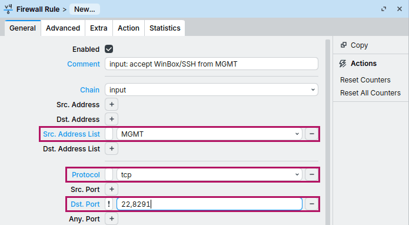
| Порт | Служба |
|---|---|
| TCP 8291 | WinBox |
| TCP 22 | SSH |
| TCP 80 / 443 | WebFig (додайте, якщо використовується) |
Додатковий рівень захисту
Обмежте адреси і в налаштуваннях самих служб: IP → Services → поле Available From (CLI: /ip service set winbox address=192.168.10.0/24). Детальніше - у розділі Захист пристроїв
Правила 5-6 - DNS з LAN
- General: Chain =
input, Protocol =udp, Dst. Port =53, In. Interface List =LAN - Action:
accept
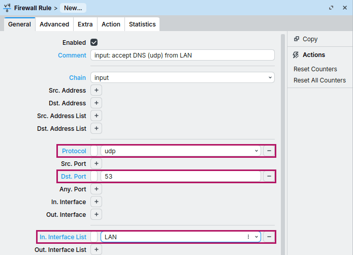
DNS використовує і UDP, і TCP. Друге правило швидше створити копіюванням: відкрийте правило подвійним кліком → Copy
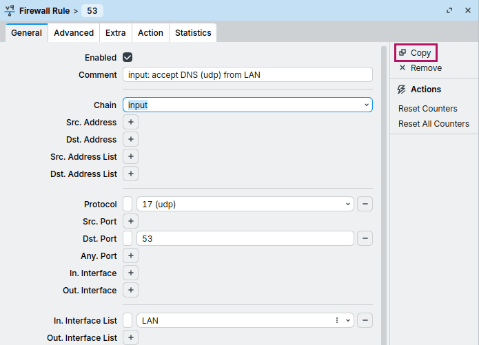
У копії змініть Protocol на tcp та коментар → OK
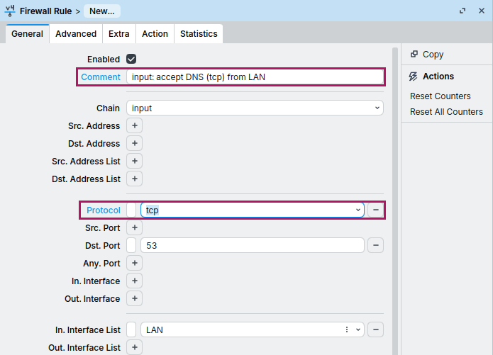
Відкритий DNS-резолвер
Якщо на R1 увімкнено allow-remote-requests=yes, а firewall не обмежує порт 53, маршрутизатор відповідатиме на DNS-запити з Інтернету. Такі "відкриті резолвери" використовують для DDoS-атак (DNS amplification). Правило 7 закриває цю проблему
Правило 7 - заборонити все інше
- General: Chain =
input(інших умов немає - правило підходить для будь-якого пакета) - Action: Action =
drop, ☑ Log, Log Prefix =IN-DROP
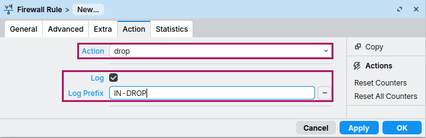
Перевірте перед натисканням OK
Правило 4 (WinBox/SSH з MGMT) вже існує, ви підключені з VLAN 10, Safe Mode увімкнено
Результат - ланцюжок input:
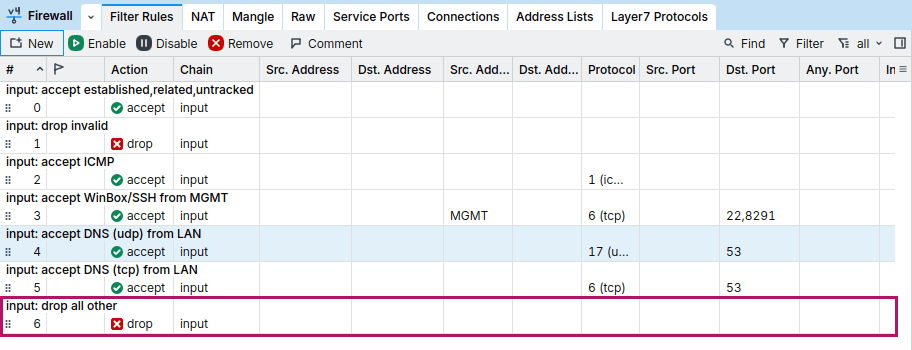
Якщо WinBox-сесія не обірвалася - вимкніть Safe Mode, щоб зберегти зміни
DHCP-сервер і CAPsMAN
DHCP-сервер на R1 працює навіть без окремого дозволу (він отримує пакети в обхід firewall), але запити клієнтів потраплятимуть у журнал з позначкою IN-DROP. Щоб не засмічувати журнал, додайте вище правила 7 правило chain=input protocol=udp dst-port=67 in-interface-list=LAN action=accept. Якщо на маршрутизаторі працює CAPsMAN, дозвольте також dst-address=127.0.0.1 (як у заводській конфігурації)
3.5 Крок 4 - Захист мереж (ланцюжок forward)
| № | Правило | Навіщо |
|---|---|---|
| 1 | accept established, related, untracked | пропустити відповіді |
| 2 | drop invalid | відкинути некоректні пакети |
| 3 | accept з vlan.10 |
адміністратори мають доступ до всіх мереж |
| 4 | accept vlan.20 → 192.168.30.10, TCP 80/443 |
користувачі → лише Web-сервер |
| 5 | accept LAN → WAN | доступ до Інтернету для всіх VLAN |
| 6 | accept dstnat з WAN | пропустити проброшені порти (крок 5) |
| 7 | drop усе інше + журнал | усі інші з'єднання між VLAN та з Інтернету заборонені |
/ip firewall filter
add chain=forward action=accept \
connection-state=established,related,untracked \
comment="forward: accept established,related,untracked"
add chain=forward action=drop connection-state=invalid \
comment="forward: drop invalid"
add chain=forward action=accept in-interface=vlan.10 \
comment="forward: accept from Admin VLAN 10"
add chain=forward action=accept in-interface=vlan.20 \
dst-address=192.168.30.10 protocol=tcp dst-port=80,443 \
comment="forward: Users -> Web server (HTTP/HTTPS)"
add chain=forward action=accept in-interface-list=LAN out-interface-list=WAN \
comment="forward: LAN -> Internet"
add chain=forward action=accept in-interface-list=WAN \
connection-nat-state=dstnat \
comment="forward: accept port forwarding (dstnat)"
add chain=forward action=drop log=yes log-prefix="FWD-DROP" \
comment="forward: drop all other"
WinBox: IP → Firewall → Filter Rules → New
Правила 1, 2 та 7 створюються так само, як у ланцюжку input, але з Chain = forward (для правила 7 - Log Prefix = FWD-DROP)
Правило 3 - адміністратори мають доступ усюди
- General: Chain =
forward, In. Interface =vlan.10 - Action:
accept
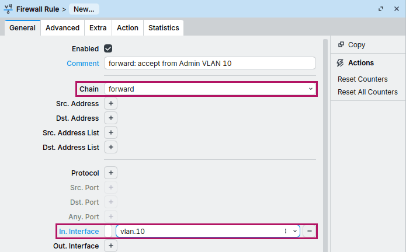
Правило 4 - користувачі → Web-сервер
- General: Chain =
forward, Dst. Address =192.168.30.10, Protocol =tcp, Dst. Port =80,443, In. Interface =vlan.20 - Action:
accept
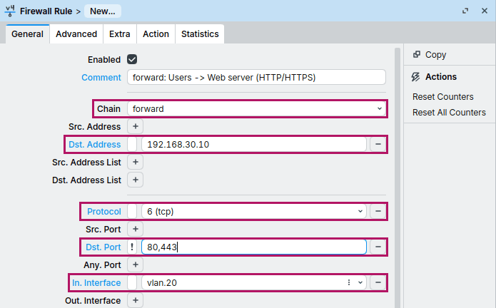
Відповіді сервера пройдуть через правило 1 (established), а от самостійно звернутися до VLAN 20 сервер не зможе - такі з'єднання відкине правило 7
Правило 5 - доступ до Інтернету
- General: Chain =
forward, In. Interface List =LAN, Out. Interface List =WAN - Action:
accept
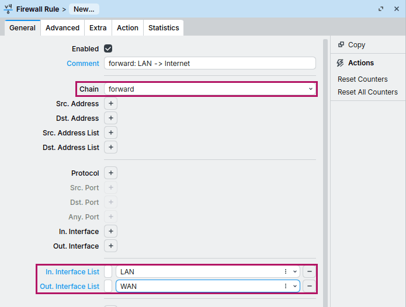
Правило 6 - пропустити проброшені порти
- General: Chain =
forward, In. Interface List =WAN, Connection NAT State = ☑dstnat - Action:
accept
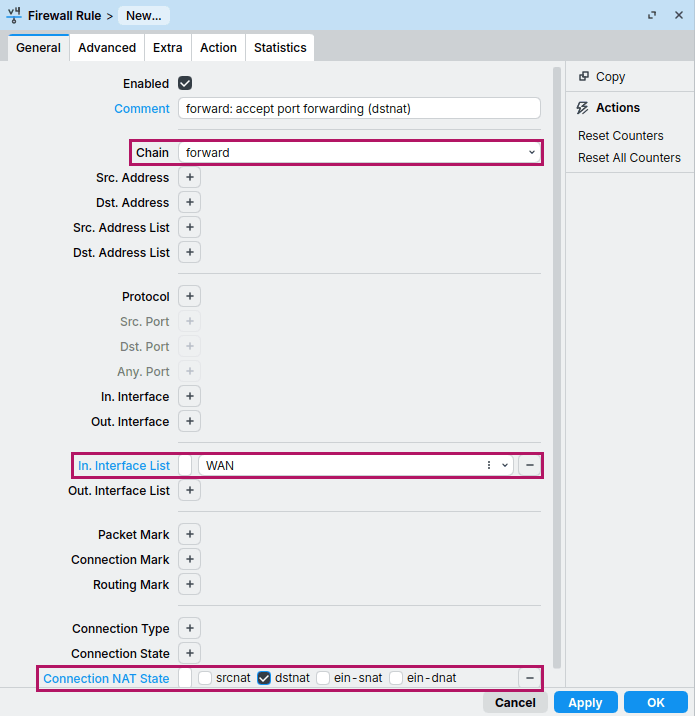
Навіщо connection-nat-state=dstnat
Правило dst-nat (крок 5) змінює адресу призначення ще до ланцюжка forward, тому тут пакет уже має адресу 192.168.30.10, а не WAN-адресу R1. Умова dstnat пропускає з Інтернету лише ті з'єднання, для яких явно створено правило прокидання порту. Щоб опублікувати ще один сервіс, достатньо додати правило NAT
Результат - повний список правил Filter:
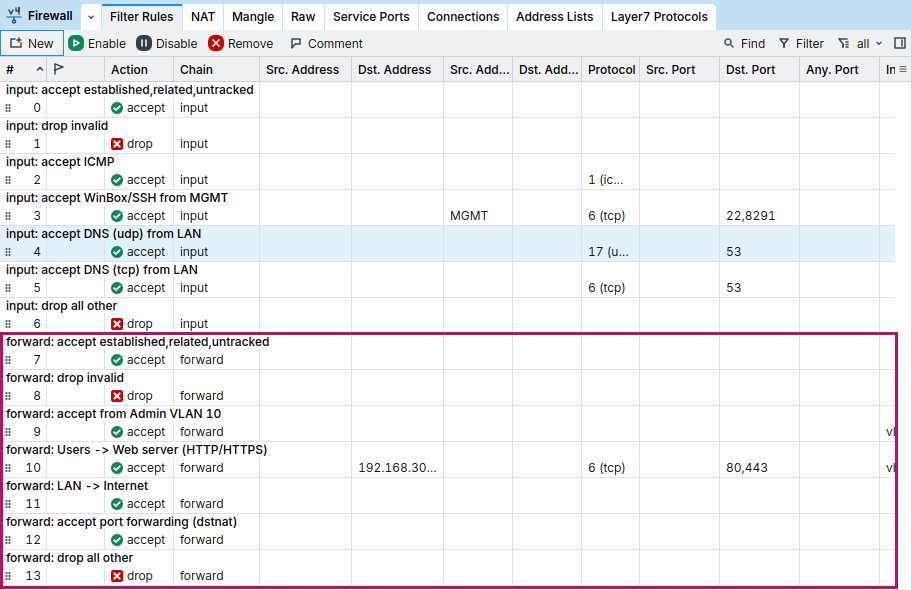
3.6 Крок 5 - NAT: вихід в Інтернет та прокидання порту
3.6.1 Masquerade - доступ LAN до Інтернету
/ip firewall nat
add chain=srcnat action=masquerade out-interface-list=WAN \
comment="masquerade LAN -> Internet"
WinBox: IP → Firewall → вкладка NAT → New:
- General: Chain =
srcnat, Out. Interface List =WAN - Action: Action =
masquerade
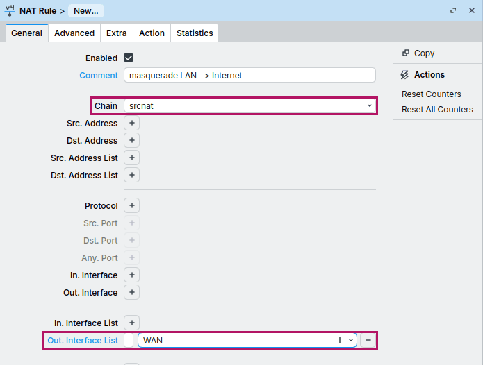
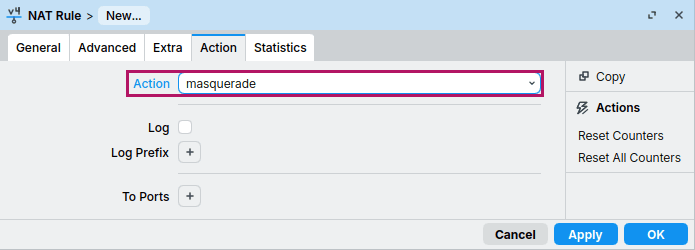
masquerade чи src-nat?
masquerade автоматично підставляє поточну адресу WAN-інтерфейсу - це потрібно, коли адреса динамічна (DHCP, PPPoE). Якщо провайдер видав статичну адресу, використовують action=src-nat to-addresses=<публічна IP>
3.6.2 Dst-nat - прокидання порту до Web-сервера
Запити на порт TCP 8080 WAN-адреси R1 передаються на 192.168.30.10:80
/ip firewall nat
add chain=dstnat action=dst-nat in-interface-list=WAN \
protocol=tcp dst-port=8080 to-addresses=192.168.30.10 to-ports=80 \
comment="port forwarding: WAN:8080 -> Web server:80"
WinBox: NAT → New:
- General: Chain =
dstnat, Protocol =tcp, Dst. Port =8080, In. Interface List =WAN - Action: Action =
dst-nat, To Addresses =192.168.30.10, To Ports =80
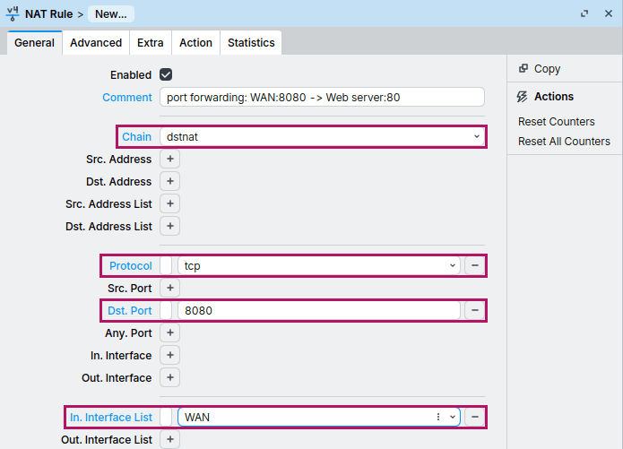
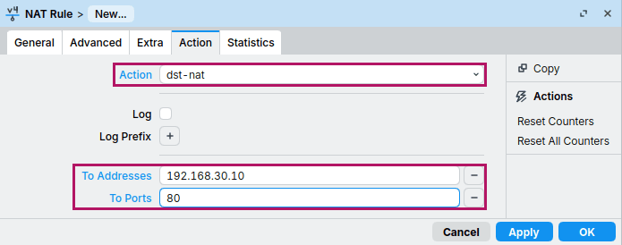
Результат - правила NAT:
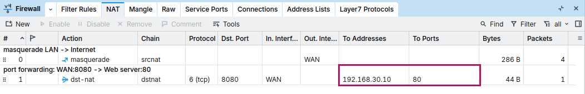
Hairpin NAT
Клієнти з LAN не зможуть відкрити сервер за зовнішньою адресою R1 (порт 8080) - для цього потрібне додаткове правило hairpin NAT. Усередині мережі звертайтеся до сервера напряму: http://192.168.30.10
3.7 Крок 6 - Перевірка
3.7.1 Лічильники правил
Колонки Bytes та Packets показують, скільки трафіку обробило кожне правило. Правило з нульовим лічильником або не потрібне, або має помилку в умовах, або розміщене нижче за інше правило, яке "перехоплює" його трафік
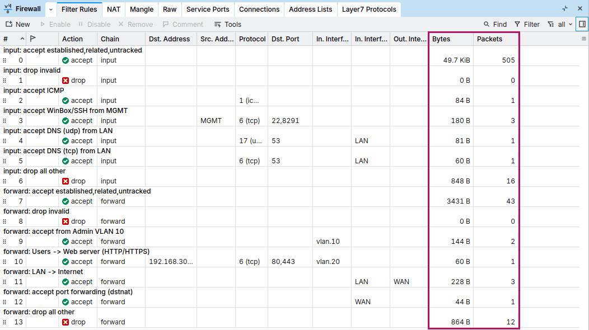
Колонки таблиці налаштовуються кнопкою ≡ праворуч від заголовків. Скинути лічильники - Reset All Counters у бічній панелі
3.7.2 Журнал
Правила з ☑ Log записують відкинуті пакети в журнал (Log) з префіксом IN-DROP / FWD-DROP:
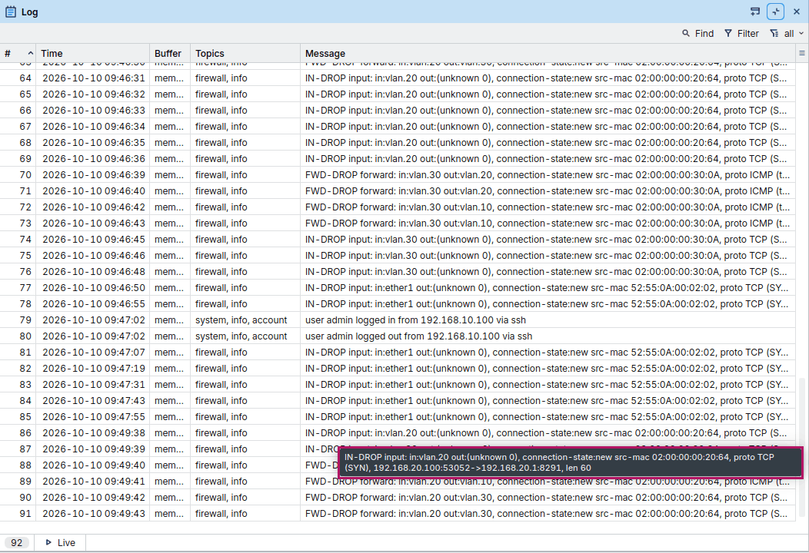
Розбір запису:
IN-DROP input: in:vlan.20 out:(unknown 0), connection-state:new
src-mac 02:00:00:00:20:64, proto TCP (SYN),
192.168.20.100:53052->192.168.20.1:8291, len 60
IN-DROP- префікс правила,input- ланцюжокin:vlan.20- вхідний інтерфейс (з якого VLAN прийшов пакет)connection-state:new- спроба нового з'єднання192.168.20.100:53052->192.168.20.1:8291- ПК з VLAN 20 намагався підключитися до WinBox маршрутизатора
3.7.3 Таблиця з'єднань
Вкладка Connections показує з'єднання, які відстежує маршрутизатор:
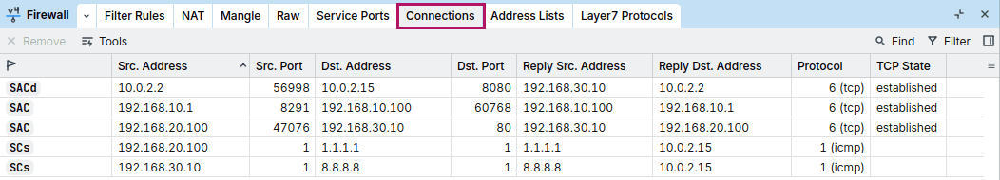
| Прапорець | Значення |
|---|---|
S |
seen reply - на з'єднання була відповідь |
A |
assured - з'єднання підтверджене (трафік в обидва боки) |
C |
confirmed - з'єднання записане в таблицю |
s |
srcnat - до з'єднання застосовано srcnat (masquerade) |
d |
dstnat - до з'єднання застосовано dstnat (прокидання порту) |
3.7.4 Перевірка політики з вузлів
| Звідки | Перевірка | Очікуваний результат |
|---|---|---|
| ПК VLAN 20 | ping 192.168.20.1 |
✅ відповідь (ICMP дозволено) |
| ПК VLAN 20 | ping 192.168.10.100 |
❌ немає відповіді |
| ПК VLAN 20 | curl http://192.168.30.10 |
✅ сторінка Web-сервера |
| ПК VLAN 20 | nc -zv 192.168.30.10 22 |
❌ тайм-аут |
| ПК VLAN 20 | WinBox або nc -zv 192.168.20.1 8291 |
❌ тайм-аут |
| ПК VLAN 20 | nslookup mikrotik.com 192.168.20.1 |
✅ DNS відповідає |
| ПК VLAN 20 | ping 1.1.1.1 |
✅ Інтернет працює |
| ПК VLAN 10 | ping 192.168.20.100, nc -zv 192.168.30.10 22 |
✅ адміністратор має доступ усюди |
| ПК VLAN 10 | WinBox на 192.168.10.1 | ✅ |
| Сервер VLAN 30 | ping 192.168.20.100 |
❌ |
| Сервер VLAN 30 | ping 1.1.1.1 |
✅ |
| Вузол в Інтернеті | curl http://<WAN-адреса R1>:8080 |
✅ сторінка Web-сервера |
| Вузол в Інтернеті | WinBox на WAN-адресу R1 | ❌ |
Чим перевіряти
VPCS у PNET Lab має обмежений набір команд (ping, trace). Для перевірки HTTP, DNS та TCP-портів зручніше використовувати вузли з Linux (curl, nc, nslookup). Після кожної перевірки дивіться, який лічильник збільшився і що з'явилося в журналі
3.8 Додатково - захист від сканування портів (PSD + Raw)
PSD (Port Scan Detection) виявляє сканування: кожен TCP-пакет на новий порт має "вагу". Якщо пакети від однієї адреси на різні порти йдуть з паузою не більше Delay Threshold, а їх сумарна вага досягає Weight Threshold, ця адреса вважається сканером
| Параметр | Значення | Пояснення |
|---|---|---|
| Weight Threshold | 21 | поріг сумарної ваги |
| Delay Threshold | 3 с | максимальна пауза між пакетами однієї серії сканування |
| Low Port Weight | 3 | вага порту < 1024 (7 таких портів = 21) |
| High Port Weight | 1 | вага порту ≥ 1024 (21 такий порт = 21) |
Сканер потрапляє в список port_scanners на добу, а правило в Raw відкидає весь його трафік ще до connection tracking
/ip firewall filter
add chain=input action=add-src-to-address-list protocol=tcp \
psd=21,3s,3,1 src-address-list=!MGMT \
address-list=port_scanners address-list-timeout=1d \
comment="input: detect port scan -> port_scanners" \
place-before=[find comment="input: drop all other"]
/ip firewall raw
add chain=prerouting action=drop src-address-list=port_scanners \
comment="raw: drop port scanners"
WinBox: Filter Rules → New:
- General: Chain =
input, Src. Address List =MGMTз інверсією ! (адміністраторів не блокуємо), Protocol =tcp
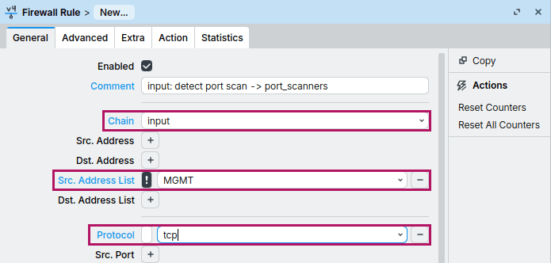
- Extra: розгорнути PSD і задати параметри
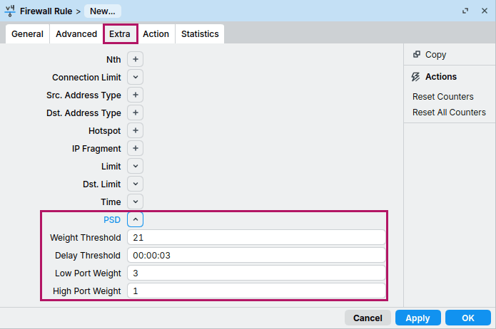
- Action: Action =
add src to address list, Address List =port_scanners, Timeout =1d 00:00:00
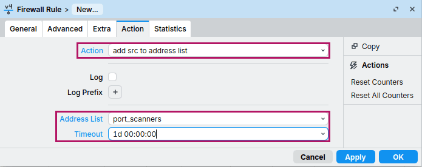
Нове правило з'являється в кінці списку. Перетягніть його за маркер ⠿ вище правила input: drop all other - інакше пакети будуть відкинуті раніше, ніж PSD їх проаналізує
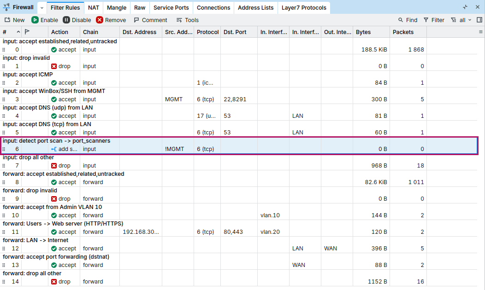
Правило в Raw: IP → Firewall → вкладка Raw → New:
- General: Chain =
prerouting, Src. Address List =port_scanners - Action:
drop
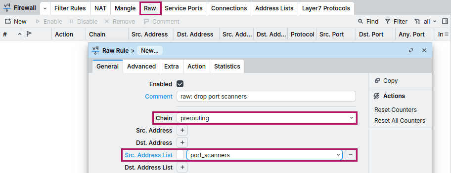
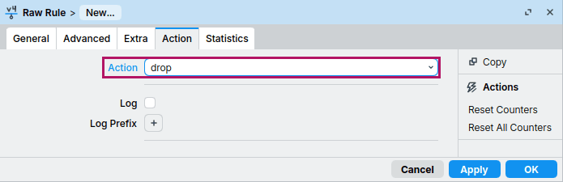
Перевірка: після сканування з ПК VLAN 20 (nmap 192.168.20.1) його адреса з'являється у списку з тайм-аутом, і весь трафік з неї відкидається - навіть ping
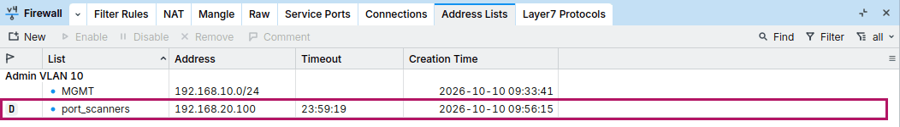
# Розблокувати адресу вручну
/ip firewall address-list remove \
[find list=port_scanners address=192.168.20.100]
Чому Raw
Raw обробляє пакети до connection tracking, тому відкидання там найменше навантажує процесор - це важливо під час сканування чи DoS-атаки
3.9 Додатково - FastTrack
FastTrack пропускає пакети вже встановлених з'єднань в обхід більшої частини firewall, що значно знижує навантаження на процесор. Правило ставиться першим у ланцюжку forward:
/ip firewall filter
add chain=forward action=fasttrack-connection \
connection-state=established,related comment="forward: fasttrack" \
place-before=[find comment="forward: accept established,related,untracked"]
Обмеження FastTrack
- Пакети FastTrack-з'єднань не проходять через Mangle, Queues та більшість правил firewall - не вмикайте його разом із Simple Queues (обмеження швидкості) та політиками IPsec без додаткових винятків
- Після додавання з'являється динамічне правило
special dummy rule to show fasttrack counters- це нормально - На пристроях з апаратним прискоренням маршрутизації (L3 HW offload) правило може мати ще параметр
hw-offload=yes. На CHR і пристроях без такої підтримки цей параметр недоступний
3.10 Додатково - доступ на рівні L2 та IPv6
MAC-WinBox обходить IP firewall
WinBox уміє підключатися за MAC-адресою (вкладка Neighbors) - це трафік 2 рівня, і правила IP → Firewall його не фільтрують. Обмежте MAC-доступ та виявлення сусідів:
/tool mac-server set allowed-interface-list=LAN
/tool mac-server mac-winbox set allowed-interface-list=LAN
/ip neighbor discovery-settings set discover-interface-list=LAN
Ще краще - створити окремий список інтерфейсів лише з vlan.10. Детальніше - у розділі Захист пристроїв
IPv6 потребує окремого firewall
Правила /ip firewall діють лише для IPv4. Якщо IPv6 не використовується - вимкніть його: /ipv6 settings set disable-ipv6=yes. Якщо використовується - налаштуйте аналогічні правила в /ipv6 firewall filter
3.11 Повна конфігурація (CLI)
Повний скрипт налаштування firewall (натисніть, щоб розгорнути)
# ===== Списки інтерфейсів =====
/interface list
add name=WAN
add name=LAN
/interface list member
add list=WAN interface=ether1
add list=LAN interface=vlan.10
add list=LAN interface=vlan.20
add list=LAN interface=vlan.30
# ===== Список адрес адміністраторів =====
/ip firewall address-list
add list=MGMT address=192.168.10.0/24 comment="Admin VLAN 10"
# ===== Захист маршрутизатора (input) =====
/ip firewall filter
add chain=input action=accept \
connection-state=established,related,untracked \
comment="input: accept established,related,untracked"
add chain=input action=drop connection-state=invalid \
comment="input: drop invalid"
add chain=input action=accept protocol=icmp \
comment="input: accept ICMP"
add chain=input action=accept protocol=tcp dst-port=22,8291 \
src-address-list=MGMT comment="input: accept WinBox/SSH from MGMT"
add chain=input action=accept protocol=udp dst-port=53 in-interface-list=LAN \
comment="input: accept DNS (udp) from LAN"
add chain=input action=accept protocol=tcp dst-port=53 in-interface-list=LAN \
comment="input: accept DNS (tcp) from LAN"
add chain=input action=add-src-to-address-list protocol=tcp \
psd=21,3s,3,1 src-address-list=!MGMT \
address-list=port_scanners address-list-timeout=1d \
comment="input: detect port scan -> port_scanners"
add chain=input action=drop log=yes log-prefix="IN-DROP" \
comment="input: drop all other"
# ===== Захист мереж (forward) =====
add chain=forward action=accept \
connection-state=established,related,untracked \
comment="forward: accept established,related,untracked"
add chain=forward action=drop connection-state=invalid \
comment="forward: drop invalid"
add chain=forward action=accept in-interface=vlan.10 \
comment="forward: accept from Admin VLAN 10"
add chain=forward action=accept in-interface=vlan.20 \
dst-address=192.168.30.10 protocol=tcp dst-port=80,443 \
comment="forward: Users -> Web server (HTTP/HTTPS)"
add chain=forward action=accept in-interface-list=LAN out-interface-list=WAN \
comment="forward: LAN -> Internet"
add chain=forward action=accept in-interface-list=WAN \
connection-nat-state=dstnat \
comment="forward: accept port forwarding (dstnat)"
add chain=forward action=drop log=yes log-prefix="FWD-DROP" \
comment="forward: drop all other"
# ===== NAT =====
/ip firewall nat
add chain=srcnat action=masquerade out-interface-list=WAN \
comment="masquerade LAN -> Internet"
add chain=dstnat action=dst-nat in-interface-list=WAN \
protocol=tcp dst-port=8080 to-addresses=192.168.30.10 to-ports=80 \
comment="port forwarding: WAN:8080 -> Web server:80"
# ===== Raw: відкидати трафік сканерів портів =====
/ip firewall raw
add chain=prerouting action=drop src-address-list=port_scanners \
comment="raw: drop port scanners"
Скрипт можна вставити в термінал (New Terminal у WinBox) або завантажити файлом firewall.rsc у Files і виконати /import file-name=firewall.rsc
4 Типові помилки
| Симптом | Причина | Рішення |
|---|---|---|
| Після додавання правила обірвався WinBox | drop у input стоїть вище за правило для MGMT або підключення не з VLAN 10 |
Safe Mode відкотить зміни. Без нього - підключитися через консоль або MAC-WinBox і виправити порядок |
| Не відкриваються сайти, хоча доступ дозволено | немає правила established,related - блокуються відповіді |
додати правило 1 у forward та input |
| Лічильник правила дорівнює 0 | вище стоїть правило, яке "перехоплює" трафік, або помилка в умовах | перевірити порядок і умови, переглянути журнал |
| Прокидання порту не працює | у forward немає правила dstnat або в NAT вказано не той порт/інтерфейс |
перевірити правило 6 кроку 4 і правило dst-nat |
| Прокидання порту не працює зсередини LAN | потрібен hairpin NAT | звертатися до сервера за внутрішньою адресою |
| Новий VLAN не має доступу до Інтернету | інтерфейс не додано до списку LAN |
/interface list member add list=LAN interface=vlan.40 |
failure: already have interface list with such name |
список уже існує (заводська конфігурація) | використати наявний список, перевірити його склад |
5 Корисні команди
# Правила з лічильниками
/ip firewall filter print stats
/ip firewall nat print stats
# Детально - лише правила ланцюжка input
/ip firewall filter print detail where chain=input
# Скинути лічильники
/ip firewall filter reset-counters-all
# Записи журналу firewall
/log print where topics~"firewall"
# Активні з'єднання
/ip firewall connection print
# Тимчасово вимкнути / увімкнути правило
/ip firewall filter disable [find comment="forward: drop all other"]
/ip firewall filter enable [find comment="forward: drop all other"]
# Перемістити правило вище за інше
/ip firewall filter move \
[find comment="input: detect port scan -> port_scanners"] \
destination=[find comment="input: drop all other"]
📌 Зберегти резервну копію MikroTik:
System → Backupабо через CLI:/system backup save📌 Експортувати правила firewall у текстовий файл:
/ip firewall export file=firewall
Джерело
Стаття базується на офіційній документації MikroTik: